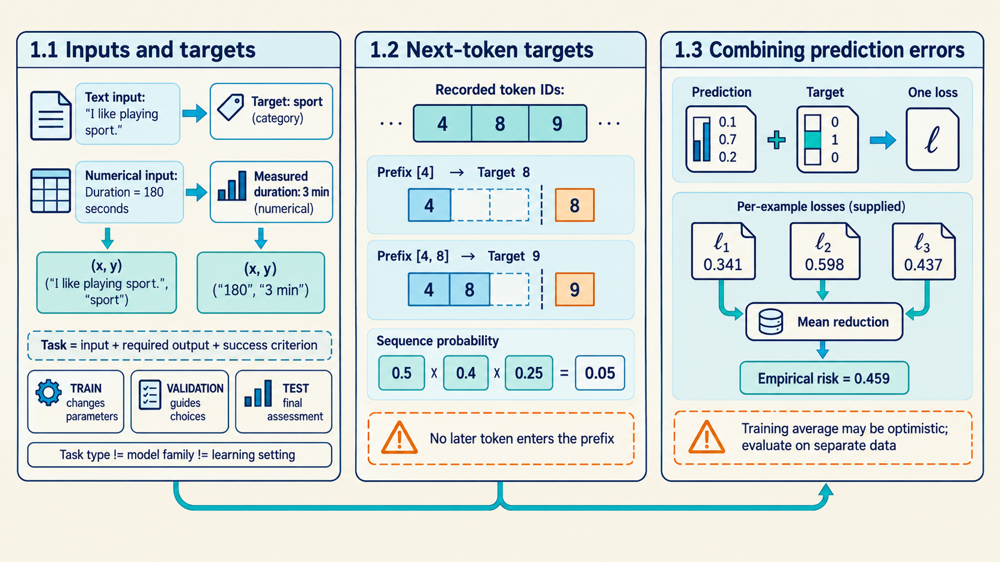
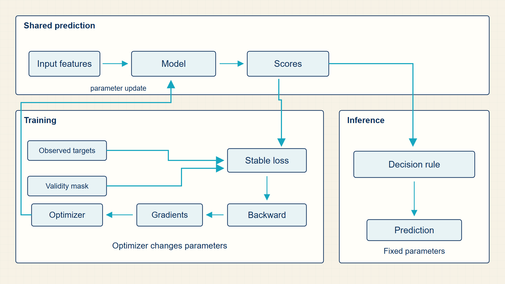

1 Prediction targets and training pairs
Training needs a way to judge the predictions a model makes. For topic classification, a supplied category provides the reference answer. For predicting a program’s running time, a measured duration provides it. For predicting the next token in text, the recorded continuation provides it. Each task therefore needs both an input and suitable reference information before prediction errors can be calculated.
Foundations called this reference answer or measured value a target. Inference can produce a prediction without knowing its target. Section 1.1 begins with targets supplied alongside inputs, and §1.2 constructs next-token targets from recorded text. Section 1.3 then defines how a loss measures one prediction error and how empirical risk combines those losses across examples.

The two routes in the figure obtain reference answers from supplied labels and from recorded text. Once the pairs are available, the remaining question is how to measure the difference between a prediction and its reference answer.
1.1 Inputs and targets
A topic prediction can be assessed only if a reference category is available for that text. For a classifier that distinguishes finance from sport, a collection of texts therefore needs corresponding topic labels. During training, these labels guide changes to the model. During evaluation, they allow its predictions to be checked while its parameters remain fixed.
The learning task specifies the input, the required output, and how success will be judged. Here the input is a text and the output is a topic category. The model’s proposed category is its prediction. The supplied category is its label, used as the reference answer, or target. A labeled dataset pairs inputs with these reference answers. Each pair can serve as a training example in supervised learning.
Classification requires a category, while regression requires a numerical value. For a model predicting a program’s running time, an input might describe the program’s input size and hardware settings. Its target is the measured running time. The reference answer has a different form, but the dataset still pairs each input with the result against which its prediction will be compared.
The task also specifies how many categories an input may receive. Binary classification selects between two categories, while multiclass classification selects one from a larger set. Multilabel classification allows several labels for the same input, such as two languages present in one message. The dataset must record all the reference labels required by that task. The examples below use one category per input.
To write that pairing precisely, let \(\mathcal D\) be a dataset containing \(N_{\mathrm{ex}}\) examples. For example \(i\), \(x_i\) is the complete input and \(y_i\) is its reference answer. The index \(i\) runs from \(1\) to \(N_{\mathrm{ex}}\).
Labeled dataset:
\[ \mathcal D = \{(x_i,y_i)\}_{i=1}^{N_{\mathrm{ex}}} \tag{1.1}\]
An input can initially be raw text. Numerical calculations later use features, properties of the input such as word counts or indicators that particular words occur. Converting the input into features must preserve its association with the same reference answer.
Example: Two labeled examples
Suppose two numerical features indicate whether sport and finance keywords occur in a text. The vector \([1,0]\) records sport evidence, and \([0,1]\) records finance evidence. The supplied labels use \(1\) for sport and \(0\) for finance.
The dataset \(\{([1,0],1),([0,1],0)\}\) contains two input-answer pairs. The prediction for \([1,0]\) is compared with label \(1\), and the prediction for \([0,1]\) with label \(0\).
Conclusion: The feature row records information available to the model. The label records the answer used to judge its prediction. These labels are category codes: choosing a different consistent encoding would preserve the same two categories.
The required answer determines the task, but it leaves several modeling choices open. As Foundations explained, a discriminative topic model directly estimates a category given a text, written \(P(\mathrm{label}\mid\mathrm{text})\). Here \(P\) denotes probability and the vertical bar means “given.” A generative language model represents probabilities for text sequences. It can also perform topic classification when the requested text output is a category. A simple weighted sum and a neural network can therefore serve the same task through different calculations.
The form of the input and output is another distinction. Sequence-to-sequence modeling maps an input sequence to an output sequence, as in translation. A task type states the required output. A model family describes how outputs are calculated, and a learning setting states where the training signal comes from. For example, a language model can learn from recorded text and repeatedly choose among token categories to generate a sequence. Section 1.2 explains where its reference answers come from.
The dataset also needs to keep training examples separate from examples used to assess performance. Good predictions on examples used during training do not establish performance on new inputs. A training set is the subset of examples used to adjust parameters. A validation set contains separate examples used to guide development decisions. A test set is reserved for a final assessment after those decisions. Dividing the dataset into these subsets is called a split. Each subset keeps its inputs paired with their reference answers.
During one training run, performance on the validation set can be checked periodically to see whether further training still improves predictions on separate examples. These checks can help determine when to stop and which saved stage of the model to retain. A saved set of model parameters is called a checkpoint. These validation checks can compare checkpoints from the ongoing run. Trying different training settings is another possible use of validation data, with an additional computational cost.
The test set then assesses the model after those choices. If test results guide further adjustments, the test examples influence development. The reported test score can become too optimistic about new inputs because the adjustments may partly suit those particular examples. Chapter 9 develops the conditions needed for a useful evaluation.
The following code illustrates how the pairs remain intact when rows are separated. The Python software library pandas stores tabular data. Its DataFrame class holds the four texts and their labels, with \(0\) for finance and \(1\) for sport. The iloc selector takes the first three rows for training and the remaining row for validation.
Code example: A small labeled dataset with explicit train and validation splits
import pandas as pd
# Each row is one example. The label is the supervised target.
examples = pd.DataFrame({
"text": ["markets rise", "team wins", "shares fall", "player scores"],
"label": [0, 1, 0, 1],
})
train = examples.iloc[:3]
validation = examples.iloc[3:]
print(train[["text", "label"]])
print(validation[["text", "label"]])Conclusion: The output contains two disjoint groups of rows, each retaining its text-label pairs. This code illustrates data preparation before training. Four examples in their original order are insufficient for a reliable performance estimate. A full experiment needs a split appropriate to the data and a separate test set.
Topic classification requires topic labels. Text without those annotations can still supply training answers for a different task: predicting its continuation.
1.2 Next-token targets
A text collection may have no topic labels, but it records which pieces of text follow one another. Those recorded continuations supply reference answers for training a language model. The input is the text available so far, and the answer is the next recorded piece.
A token is one unit in the model’s text sequence, such as a word or part of a word. Its token ID is an integer identifying that unit. Chapter 2 explains how text is converted into these IDs. Here a short sequence of IDs is enough to show which positions form each input and answer.
The sequence before the token being predicted is its prefix. During training, a prediction from that prefix is compared with the next token recorded in the text. The recorded token supplies one reference continuation, even when other continuations would also make sense. The references are constructed from the text itself, which makes this a self-supervised training task.
Let \(T\) be the sequence length and \(x_t\) the token ID at position \(t\). The index \(t\) identifies a position within a sequence, while \(i\) in Section 1.1 identifies a dataset example. For an input prefix ending at position \(t\), the reference answer is the following token, \(x_{t+1}\).
Next-token target:
\[ \operatorname{target}_t=x_{t+1},\quad t=1,\ldots,T-1 \tag{1.2}\]
For a three-token sequence, the input row is \([x_1,x_2]\) and the corresponding target row is \([x_2,x_3]\). The target row starts one position later in the recorded sequence. At each position, the model predicts from the prefix ending there. The last recorded token has no following token inside this sequence, so it supplies a target for the preceding position but no additional input-target pair.
Example: Reference answers from three tokens
For token IDs \([4,8,9]\), the input prefix \([4]\) has target \(8\). The prefix \([4,8]\), ending at \(t=2\), has target \(x_3=9\). The aligned input and target rows are \([4,8]\) and \([8,9]\).
Conclusion: One recorded sequence supplies two prediction targets without separate human annotation. The second prediction uses the full prefix \([4,8]\). Aligning the rows identifies the answers while preserving the preceding context needed to predict them.
At inference, the continuation is not supplied. Autoregressive generation produces a sequence one token at a time. A token is selected from the model’s predictions and appended to the prefix. The extended prefix becomes the input for the next prediction. The generated text changes at each step, while the model’s parameters remain fixed.
The probabilities assigned to individual tokens also give a way to score a complete sequence. Multiplying the probability of the first token by each following token’s probability given its prefix gives the sequence probability. This relationship is the probability chain rule. Write \(x_{1:T}\) for the full sequence and \(x_{<t}\) for the tokens before position \(t\). Then \(P(x_t\mid x_{<t})\) is the probability assigned to the recorded token at position \(t\), given all preceding tokens.
Sequence probability:
\[ P(x_{1:T}) = \prod_{t=1}^{T} P(x_t\mid x_{<t}) \tag{1.3}\]
The first factor is \(P(x_1)\) because no token precedes the first position. An implementation may instead condition that first prediction on a start marker. Each later factor uses its own prefix, so the calculation accounts for dependence between successive tokens.
Example: Calculating a sequence probability
Suppose a fixed model assigns \(P(x_1)=0.5\), \(P(x_2\mid x_1)=0.4\), and \(P(x_3\mid x_1,x_2)=0.25\) to an observed three-token sequence. Its sequence probability is \(0.5\cdot0.4\cdot0.25=0.05\).
Conclusion: The model assigns probability \(0.05\) to this three-token sequence. Each factor measures a different prediction conditioned on the tokens before it. Multiplication combines those successive predictions into one probability for the sequence.
A model’s context window limits how many token positions it can consider together. If a prefix exceeds that window, earlier tokens must be omitted from the direct input. A model using this shorter history can miss information needed for the next prediction. It approximates the full-history condition in the formula with the history it can use. The count-based model in Section 3.4 provides a concrete example of limited context.
The reference answers are now identified, but the computation must also keep later text out of each prediction’s input. Chapter 16 explains how that restriction is maintained when many positions are processed in parallel. Chapters 2 and 8 handle extra positions inserted to align sequence lengths and determine which positions contribute to the loss. The next step here is to measure the error when a prediction is compared with its reference answer.
1.3 Combining prediction errors
A model can predict some examples accurately and others poorly. Training needs a numerical measure that combines those errors so parameter updates can improve performance across examples. Assessing the trained model raises a related question: how large are its errors likely to be on new inputs? Both questions begin with a rule for measuring an individual prediction error.
Consider predicting a program’s total running time before execution to help plan a compute job. The inputs describe properties such as input size and hardware settings. Measured running times from previous runs provide reference answers. For a run that took 3 minutes, a prediction of 5 minutes is too high by 2 minutes.
A loss assigns a numerical penalty when a prediction is compared with its reference answer. One possible loss for this task is absolute error, the size of the difference between predicted and measured time. The five-minute prediction therefore has a loss of 2 minutes. A prediction of 4 minutes has a loss of 1 minute.
These loss values tell how far the predicted duration is from the measured duration. Equal-sized underestimates and overestimates receive the same penalty under this rule. A lower loss means a more accurate prediction by that measure. A different loss may assign different penalties to the same errors.
For classification, the reference answer is a category, so subtracting durations is no longer the relevant comparison. A classifier can instead be penalized for assigning a low probability to the reference category. Chapter 8 explains that loss. In each task, the chosen loss determines which errors contribute to training and how strongly they contribute.
Foundations introduced risk as expected prediction loss and empirical risk as the average loss on an available dataset. We can now calculate that average and examine when it supports a conclusion about new inputs.
For a dataset of \(N_{\mathrm{ex}}\) examples, let \(f_\theta(x_i)\) denote the prediction for input \(x_i\), with \(\theta\) collecting the model’s parameters. The expression \(\operatorname{loss}(f_\theta(x_i),y_i)\) is the penalty for comparing that prediction with its reference answer \(y_i\). Averaging the penalties gives the empirical risk \(\widehat R(\theta)\) at the current parameter values.
Empirical risk:
\[ \widehat{R}(\theta)=\frac{1}{N_{\mathrm{ex}}}\sum_{i=1}^{N_{\mathrm{ex}}}\operatorname{loss}(f_\theta(x_i),y_i) \tag{1.4}\]
Each example contributes equally to this average, and at least one example is needed. The value describes performance on this dataset under this loss rule. Because training uses the same examples to adjust parameters, their average loss can be an optimistic estimate of errors on new data. Evaluation on separate examples provides a further check, whose usefulness depends on how well those examples represent the intended use.
Example: Average loss from three predictions
Suppose a classifier has compared three predictions with their reference labels using the same loss rule. The resulting penalties are \(L_1=0.341\), \(L_2=0.598\), and \(L_3=0.437\). Here the individual penalties are supplied so the calculation can focus on combining them. Chapter 8 explains how classification losses are obtained.
Their sum is \(0.341+0.598+0.437=1.376\). Dividing by three gives \(\widehat R=1.376/3=0.458666\ldots\approx0.459\).
Conclusion: The empirical risk is approximately \(0.459\), the average penalty for these three predictions. Copying all three records would double their summed loss and leave the mean unchanged. It would add no new evidence about performance on other inputs. That requires additional examples appropriate to the intended use.
Software often calculates predictions for several examples together. Such a group is a batch. For \(B\) examples with \(F\) numerical features each, the feature matrix \(X\) has shape \([B,F]\). Each row represents one example and each column one feature. A row’s reference class must remain associated with that row, so a list of class IDs has shape \([B]\).
One loss per example also gives an array of shape \([N]\). Averaging those values produces a scalar. An operation that combines array values in this way is called a reduction. The numerical computing library PyTorch, imported as torch, supports these array calculations. Its DataLoader utility groups dataset examples into batches, and a loss function can return separate losses or reduce them to a mean. A sum is another possible reduction: repeating every example doubles the sum while leaving the mean unchanged.
Some loss functions use a reference value for every possible class instead of one class ID. For \(C\) classes, these targets have shape \([N,C]\). An example with one reference class can use a one-hot target. This vector places \(1\) at that class and \(0\) at the other classes. More general targets can specify a probability for each class. These are different representations of reference information, so the target layout must match the loss function’s expected input.
For training, the next question is how a parameter change affects this loss. Gradients describe that sensitivity and provide information for parameter updates. §5.4 introduces slopes and gradients. Chapter 11 derives their propagation through a model, and Chapter 10 explains update rules that use them.
The following figure places these roles within a language model. Its intermediate computations are developed later: embeddings represent tokens as numerical vectors, transformer layers combine information from permitted positions, and logits are scores converted into probabilities for possible outputs. Chapter 13 explains embeddings and Chapters 16 through 18 explain the context calculations. §4.3 introduces logits, §5.2 develops their geometry, and Chapter 6 converts them to probabilities.

The shared path produces predictions. The reference answers constructed in §1.1 and §1.2 belong to training and evaluation data, where they support loss calculation and fixed-parameter checks. Inference selects an output without that comparison or update.
The notation reference collects recurring dimensions, and the library map locates later implementations. Chapter 23 develops storage costs once the tensor operations are familiar. With the input, reference answer, and comparison established, Chapter 2 turns to the next preparation step: converting readable text into numerical inputs that can be processed together.
Chapter checkpoint
A collection contains 10,000 product reviews without sentiment labels. Decisions about when to stop training a proposed sentiment model will use one subset withheld from parameter updates. Accuracy on that same subset will then be reported as the final result. What reference answers are missing? Could next-token training answers serve the sentiment task? How should the evaluation procedure change?
Answer: Sentiment evaluation needs a definition of the sentiment categories and reference labels for the reviews. The recorded text supplies next-token answers for a continuation task, so those answers cannot serve as sentiment labels or sentiment evaluation evidence. Next-token pretraining may still produce representations that a later labeled sentiment classifier can use. Examples used to guide adjustments serve as validation data. A separate test set with reference labels is needed for the final assessment after those decisions. Reusing validation results as the final assessment can make performance appear better than it is on new reviews.
After reference labels are supplied and training is completed, the average training loss is lower. What does this empirical risk measure, and what further evidence is needed to assess performance on new reviews?
Answer: It measures the average penalty for predictions on the training reviews under the chosen loss rule. Those reviews also guided parameter updates. Evaluation on separate reviews representative of the intended use provides evidence about errors beyond the training examples, including conditions that may have been poorly represented there.